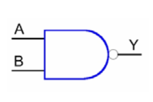

Bramka AND
Wyjście bramki logicznej AND jest w stanie wysokim tylko wtedy, gdy oba wejścia są w stanie wysokim. Symbol logiczny tej bramki i tablicę prawdy pokazano poniżej.
dostępne są bramki AND 3- i 4-wejściowe (czasem o większej liczbie wejść). Na przykład, jeżeli 8-wejściowa bramka AND będzie miała wyjście w stanie wysokim tylko wtedy, gdy wszystkie wejścia będą w stanie wysokim.
Symbol Bramki
Tabela prawdy
Bramka NAND
Bramka NAND stanowi jakby połączenie bramki AND i NOT. Zero logiczne "0" na wyjściu jest ustawiane tylko wtedy gdy na obu wejściach jest jedynka logiczna "1". W pozostałych przypadkach na wyjściu zawsze jest stan "1". Można zauważyć, że jest ona dokładną odwrotnością bramki AND - porównaj tablice prawdy dla obu bramek. Również i ta bramka może mieć wiele wejść i tylko jedno wyjście.
Symbol Bramki

Tabela prawdy
Bramka OR
Wyjście bramki OR (czyli LUB) jest w stanie wysokim, jeżeli jedno z wejść (lub oba) jest w stanie wysokim. W przypadku ogólnym bramki mogą mieć dowolną liczbę wejść, ale typowy układ scalony zawiera zwykle cztery bramki 2-wejściowe, trzy bramki 3-wejściowe lub dwie bramki 4-wejściowe. Na przykład, wejście 4-wejściowej bramki OR będzie w stanie wysokim, jeżeli przynajmniej jedno jej wejście będzie w stanie wysokim.
Symbol Bramki
Tabela prawdy
Bramka NOR
Bramka NOR jest odwrotnością bramki OR. Zero na wyjściu pojawia się zawsze wtedy, gdy choćby na jednym z wejść jest jedynka logiczna. Tylko wtedy, gdy wszystkie wejścia są ustawione w stan "0" na wyjściu pojawia się "1".
Symbol Bramki
Tabela prawdy
Bramka XOR
Exclusive-OR (XOR, czyli WYŁĄCZNIE NIE) jest ciekawą funkcją, chociaż mniej podstawową niż AND i OR. Wyjście bramki XOR jest w stanie wysokim, jeżeli jedno albo drugie wejście jest w stanie wysokim (jest to zawsze funkcja dwóch zmiennych). Bramka XOR realizuje dodawanie bitów modulo-2. Inna nazwa to EX-OR.
Symbol Bramki
Tabela prawdy
Bramka NXOR
Bramka NXOR jest odwrotnością bramki XOR. Wyjście bramki NXOR jest w stanie wysokim gdy oba wejścia są takie same. Inna nazwa to EX-NOR.
Symbol Bramki
Tabela prawdy
Bramka NOT
Bramka NOT jest najprostrzą w działaniu bramką logiczną. Jej zadaniem jest odwracanie (negowanie) sygnału wejściowego. Gdy na wejściu ustawimy sygnał "1" to na wyjściu otrzymamy "0", a gdy na wejściu ustawimy "0" to na wyjściu pojawi się "1". Wejście bramki, wg przedstawionego poniżej symbolu graficznego, znajduje się po lewej stronie; po prawej jest jej wyjście. Bramka ta posiada tylko jedno wejście.
Symbol Bramki
Tabela prawdy